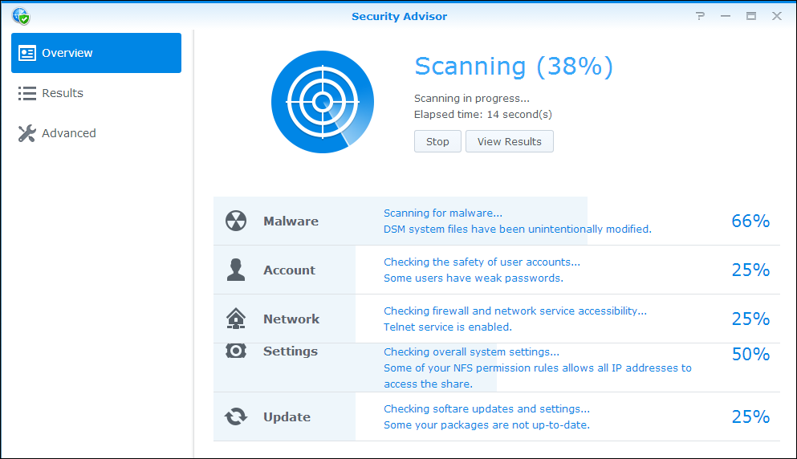

Översikt
DSM har en ny funktion kallad Security Advisor som hjälper till att skydda din Synology NAS. Security Advisor skannar den övergripande konfigurationen för din Synology NAS och ger detaljerade rapporter om dess säkerhetsstatus. Dessutom kommer Security Advisor att visa hur du ska hantera eventuella identifierade säkerhetsrisker. Öppna Security Advisor och läs hur du:
- Kör en säkerhetsskann
- Visa säkerhetsregelrapporter
- Hantera säkerhetsrisker
1. Kör en säkerhetsskann
- Första gången du öppnar Security Advisor, får du frågan vad du använder din Synology NAS för. Välj Hemma eller Arbete beroende på din situation och klicka på OK. Du kan alltid ändra denna inställning senare på sidan Avancerad.
- Security Advisor börjar skanna din Synology NAS-konfiguration. Du kan se den övergripande säkerhetsstatusen, skanna program, och en resultatssammanfattning på sidan Översikt. 
- När skanningen är klar, visas resultaten för varje kategori säkerhetsregler. Security Advisor kommer att ge en övergripande status för varje kategori och sammanfatta eventuella säkerhetsriskfynd.


2. Visa säkerhetsregelrapporter
- Klicka på Visa result på sidan Översikt. Du kan visa detaljerad information för din skann på en rapport-för-rapport basis.
- Dubbelklicka på en säkerhetsregel för att öppna en detaljerad rapport. Varje rapport kan innehålla information om Allvarlighetsgrad, Beskrivning, Detaljer, och Rekommmenderad åtgärd för varje säkerhetsregel.


3. Hantera säkerhetsrisker
Låt oss ta en titt på ett exempel på en misslyckad säkerhetsregel och gå igenom hur man hanterar det.
- Security Advisor kommer att identifiera potentiella säkerhetsrisker för misslyckade säkerhetsregler. Här, upptäcker Security Advisor att "Auto Block är inaktiverad".
- Öppna en misslyckad säkerhetsregel för att se detaljerad information. Under Rekommenderad åtgärd, ger Security Advisor dig vägledning hur man hanterar säkerhetsrisken.
- Klicka på Öppna för att gå direkt till motsvarande inställningssida och följ Rekommenderad åtgärd.
- På sidan Resultat, skanna den felaktiga säkerhetsregeln genom att markera regeln och klicka på Skanna.
- Inga säkerhetsregler hittas för den här säkerhetsregeln. Security Advisor kommer att fortsätta hjälpa dig att identifiera potentiella säkerhetsrisker och rekommendera åtgärder för att hantera dessa risker. Förvara din Synology NAS säker genom att regelbundet utföra skanningar i Security Advisor!